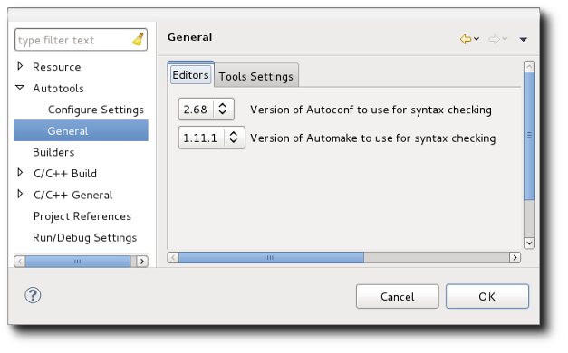
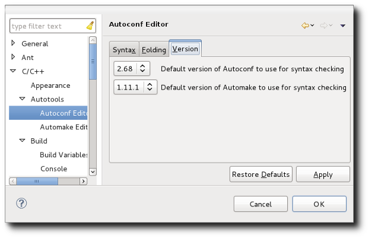
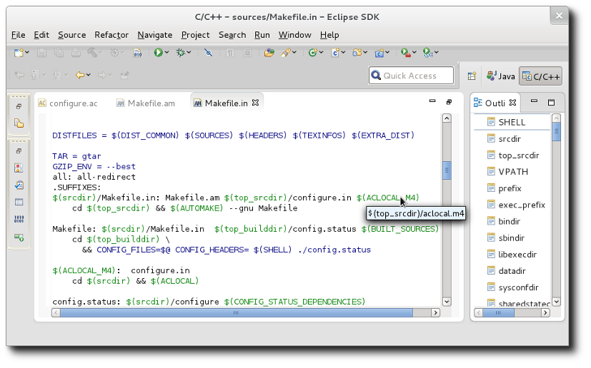

| Special Editors | ||
|---|---|---|
|
|
|
|
| Invoking Autotools | Building | |
The Autotools plug-in provides two special editors for editing Autotool input files. The first is the Autoconf Editor. This editor is invoked when opening configure.in, configure.ac files as well as the resultant configure scripts that autoconf creates. Support includes full colourization, outline view, rudimentary error parsing, and hover help/completion.

The outline view shows macro references and program control statements such as if, else, for, etc... Hover help with text completion is provided for the various AC-prefixed and AM-prefixed macros that are provided as standard. As the macros vary from release to release of autoconf and automake, the editor uses an autoconf and automake version property to determine which set of macros it should adhere to. The versions selected affect the parsing which will issue warnings for macros that do not have enough parameters or too many parameters. To set the autoconf and automake versions for the Autoconf Editor, go to the Project -> Properties -> Autotools -> General page and select the Editors tab.

There you will find a pull-down of the various versions supported. Future releases may add new versions.
The default autoconf and automake versions to use for editing can be set as a preference. Go to Window -> Preferences -> C/C++ -> Autotools -> Autoconf Editor and click on the Versions tab.

Under the Syntax tab of the same preference page, you can change the colours used for the various elements shown in the editor.
A second editor, the Automake Editor is also provided by the Autotools plug-in. This editor is invoked when opening a Makefile.am or Makefile.in file. Support includes full colourization, outline view, rudimentary error parsing, and hover help.

In the example shown, one can see the $ variable references are displayed when hovered over. This is particularly useful for $< and $@ in make targets to understand what is being referenced. In some instances, you will see reference to variables surrounded by the @ symbol (e.g. @srcdir@). This represents a variable that is to be substituted by the configure script.
Rudimentary error parsing looks for syntax errors. As with the Autoconf editor, colourization can be controlled by preferences. Go to Window -> Preferences -> C/C++ -> Autotools -> Automake Editor and click on the Syntax tab.
|
|

|
|
| Invoking Autotools | Building |